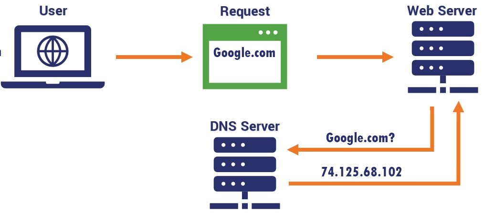

Domain Name System (DNS)
The system that translates domain names into IP addresses.

Definition of DNS
The Domain Name System (DNS) is a hierarchical and decentralized naming system used to identify computers and services on the Internet. It converts human-readable domain names (like www.example.com) into IP addresses (like 192.0.2.1) that machines use to communicate.
How DNS Works
When you type a website address into your browser, DNS servers process the request and return the correct IP address. This allows your browser to locate and load the correct web server hosting the site.
Why DNS is Important
- Eliminates the need to memorize IP addresses
- Makes internet navigation user-friendly
- Supports global internet infrastructure
- Works as a distributed system for reliability
💡 Think of DNS as the "phonebook of the internet".
DNS Resolution Process
The journey from domain name to IP address involves multiple server types:
- DNS Recursor: Receives the query from the client device
- Root Nameserver: Points to the appropriate TLD server
- TLD Nameserver: Hosts the last portion of the hostname (.com, .org)
- Authoritative Nameserver: Returns the final IP address
DNS Record Types
- A Record: Maps domain to IPv4 address
- AAAA Record: Maps domain to IPv6 address
- CNAME: Aliases one domain to another
- MX Record: Specifies mail servers for email
- TXT Record: Stores text information (SPF, DKIM)
Common DNS Providers
- Google Public DNS (8.8.8.8, 8.8.4.4)
- Cloudflare DNS (1.1.1.1, 1.0.0.1)
- OpenDNS
- ISP-provided DNS servers
DNS Security
- DNSSEC: Protects against DNS spoofing and cache poisoning
- DNS over HTTPS (DoH): Encrypts DNS queries for privacy
- DNS over TLS (DoT): Another encrypted DNS protocol
💡 Without DNS, you'd need to memorize IP addresses for every website you visit.